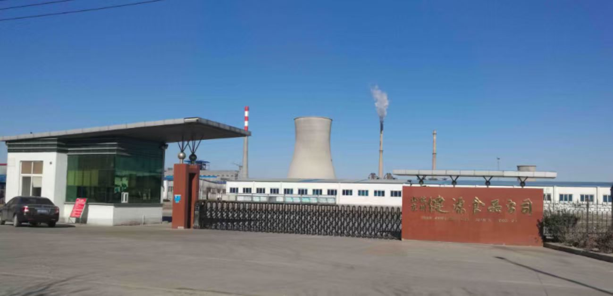

【公司简介】山东滨州健源食品有限公司地处渤海湾南岸、黄河三角洲腹地——山东省滨州市沾化区，是当地深耕健康零食赛道的食品企业之一。公司长期专注山楂制品、休闲禽肉、果脯蜜饯等品类研发与生产，下游覆盖商超、便利店与电商渠道。
【品牌矩阵】公司旗下已形成"奥赛"山楂系列、"恋上鸭"鸭肉系列、"长思"阿胶枣系列等差异化品牌组合。其中奥赛山楂主打健康零食场景，恋上鸭聚焦即食禽肉，长思阿胶枣瞄准传统养生零食人群。三个品牌共享研发与产能，但对渠道、价格带、营销节奏的运营要求各不相同，对多品牌并行管理能力提出较高要求。
【服务方式】华认联国际项目组从多品牌运营的特点出发，把服务切入口放在"品牌经理的胜任力"上。通过梳理 3 大品牌的产品线、渠道结构、价格带与营销节奏，与公司共同搭建《品牌经理一日工作流》《新品上市 6 步法》《多品牌协同会议机制》等工具，把多品牌运营的隐性经验显性化、流程化。
【后续延伸】项目交付后，公司在保留原品牌结构的基础上，开始尝试"主品牌+季节限定"的组合打法，并在山楂、鸭肉两条主力产品线之间探索联动营销。华认联国际则以本次合作为起点，与企业就"健康零食研发体系升级"建立长期顾问关系。
← 返回客户案例